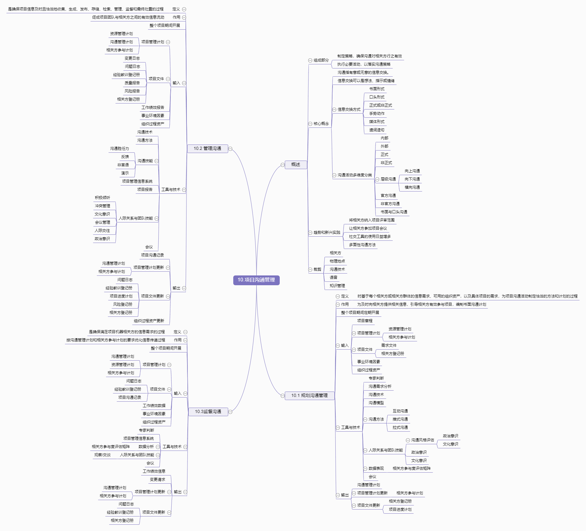

10.项目沟通管理

概述
组成部分
制定策略，确保沟通对相关方行之有效
执行必要活动，以落实沟通策略
核心概念
沟通指有意或无意的信息交换。
信息交换可以是想法、指示或情绪
信息交换方式
书面形式
口头形式
正式或非正式
手势动作
媒体形式
遣词造句
沟通活动多维度分类
内部
外部
正式
非正式
层级沟通
向上沟通
向下沟通
横向沟通
官方沟通
非官方沟通
书面与口头沟通
趋势和新兴实践
将相关方纳入项目评审范围
让相关方参加项目会议
社交工具的使用日益增多
多面性沟通方法
裁剪
相关方
物理地点
沟通技术
语音
知识管理
10.1 规划沟通管理
定义
时基于每个相关方或相关方群体的信息需求、可用的组织资产，以及具体项目的需求，为项目沟通活动制定恰当的方法和计划的过程
作用
为及时向相关方提供相关信息，引导相关方有效参与项目，编制书面沟通计划
整个项目期间定期开展
输入
项目章程
项目管理计划
资源管理计划
相关方参与计划
项目文件
需求文件
相关方登记册
事业环境因素
组织过程资产
工具与技术
专家判断
沟通需求分析
沟通技术
沟通模型
沟通方法
互动沟通
推式沟通
拉式沟通
人际关系与团队技能
沟通风格评估
政治意识
文化意识
政治意识
文化意识
数据表现
相关方参与度评估矩阵
会议
输出
沟通管理计划
项目管理计划更新
相关方参与计划
项目文件更新
相关方登记册
项目进度计划
10.2 管理沟通
定义
是确保项目信息及时且恰当地收集、生成、发布、存储、检索、管理、监督和最终处置的过程
作用
促成项目团队与相关方之间的有效信息流动
整个项目期间开展
输入
项目管理计划
资源管理计划
沟通管理计划
相关方参与计划
项目文件
变更日志
问题日志
经验教训登记册
质量报告
风险报告
相关方登记册
工作绩效报告
事业环境因素
组织过程资产
工具与技术
沟通技术
沟通方法
沟通技能
沟通胜任力
反馈
非言语
演示
项目管理信息系统
项目报告
人际关系与团队技能
积极倾听
冲突管理
文化意识
会议管理
人际交往
政治意识
会议
输出
项目沟通记录
项目管理计划更新
沟通管理计划
相关方参与计划
项目文件更新
问题日志
经验教训登记册
项目进度计划
风险登记册
相关方登记册
组织过程资产更新
10.3监督沟通
定义
是确保满足项目机器相关方的信息需求的过程
作用
按沟通管理计划和相关方参与计划的要求优化信息传递过程
整个项目期间开展
输入
项目管理计划
沟通管理计划
资源管理计划
相关方参与计划
项目文件
问题日志
经验教训登记册
项目沟通记录
工作绩效数据
事业环境因素
组织过程资产
工具与技术
专家判断
项目管理信息系统
数据分析
相关方参与度评估矩阵
人际关系与团队技能
观察/交谈
会议
输出
工作绩效信息
变更请求
项目管理计划更新
沟通管理计划
相关方参与计划
项目文件更新
问题日志
经验教训登记册
相关方登记册
{kind=link}